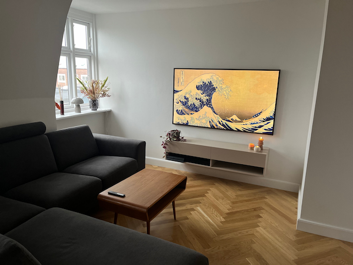

Passion for renovering
I denne korte film, interviewer vi Alberte på 27 der bor sammen med sin kæreste. Hun snakker om hendes passion om renovering da hende og kæresten startede ud med en 1 værelses, men endte ud i en 3 værelses da de senere har købt flere lejligheder i samme ejendom og har slået dem sammen. Hende og kæresten er glad for et 'nordisk' stil/udseende, derfor har de mange træmøbler men nævner dog også at de har været i japan og blev inspireret over deres stil.
